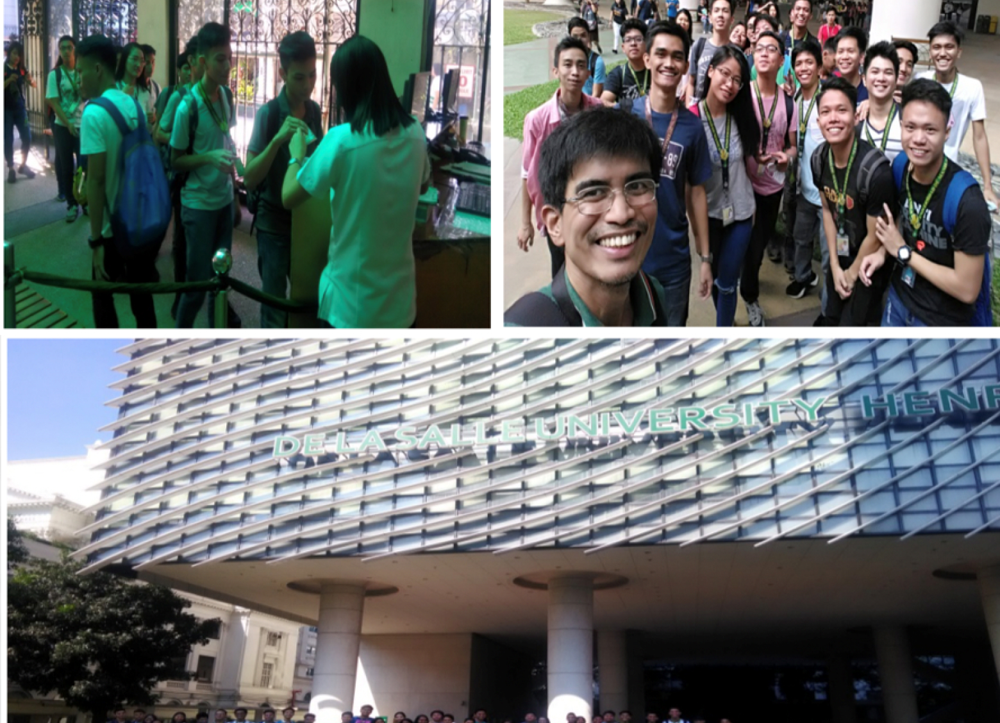

Activities


The Adopt-an-Eng program for Unibersidad de Manila (UDM) started last 3rd Term AY 2014-15. Another batch was accommodated last 1st Term AY 2015-16. This project provided reinforcing lectures for the students and faculty of the adopted school. We allowed them to use our laboratory facilities and assisted them during those laboratory activities. A list of laboratory subjects and experiments that have been identified and were conducted at DLSU ECE/CpE Laboratories. UDM were asked to send the syllabus for each of the subjects and the visits of the students were properly planned, coordinated and scheduled.
Last August 11 and 12, 2017, another round of adopt-an-eng for UDM was conducted. The ECE Department has provided several laboratory activities to the UDM ECE faculty and 3rd year and 4th year ECE and CpE students for two days (Friday and Saturday). There were a total of one-hundred seventy (170) UDM students who were given a chance to use DLSU’s Electronics and Communications laboratory facilities to perform basic and advanced electronics and computer engineering experiments. Students were grouped and lab activities were performed by batch.
| Project Title/Description | Target Audience/Community | Target Date of Implementation |
|---|---|---|
| Adopt an Engineering School Program (AESP) /
Reinforcing Online Lectures/Lab |
Universidad de Manila Students | AY 2021-2022 |
| Adopt an Engineering School Program (AESP) /
Laboratory Classes |
Identified School with Needs | AY 2022-2023 |
| Adopt an Engineering School Program (AESP) /
Laboratory Classes |
Identified School with Needs | AY 2023-2024 |
| Research Paper Writing Workshop for ECE and CpE (Online Workshop) | Open to State University Faculty | AY 2021-2022 |
| Research Paper Writing Workshop for ECE and CpE | Open to State University Faculty | AY 2022-2023 |
| Research Paper Writing Workshop for ECE and CpE | Open to State University Faculty | AY 2023-2024 |
| Service Learning
(LAWSECE – ECE) (SOFDESG – CpE) |
Identified Community thru COSCA | AY 2021-2022 |
| Service Learning | Identified Community thru COSCA | AY 2022-2023 |
| Service Learning | Identified Community thru COSCA | AY 2023-2024 |